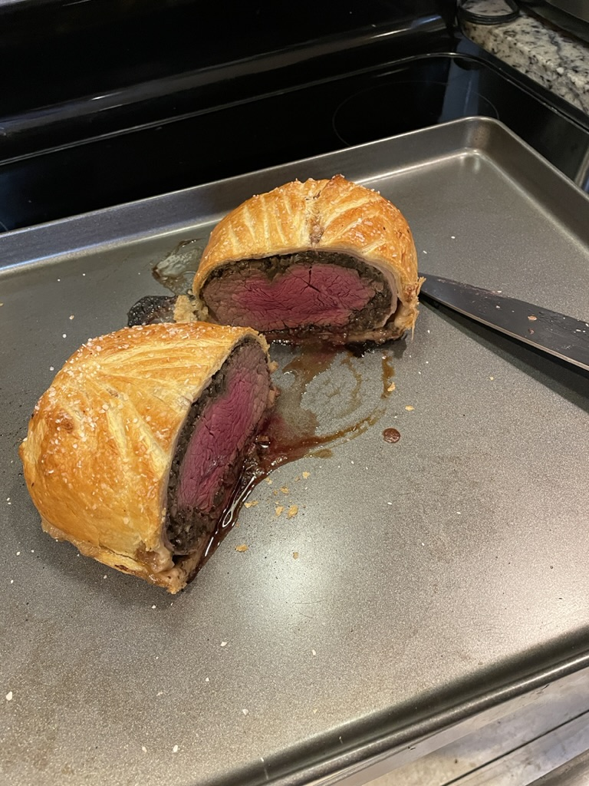

Beef Wellington

Description
This dish may seem very daunting and expensive, but don't worry. The only thing you need to be concerned with is the latter.
Ingredients
- 1 1/2 pound beef tenderloin
- 6-8 slices prosciutto ham
- 1 lb button mushrooms
- 1 shallot
- Fresh thyme
- Kosher salt and black pepper
- 1 lb puffy pastry
- Ground mustard
- Splash of whiskey
Steps
- Finely chop mushrooms by hand or food processor.
- Chop shallot and begin sweating over medium heat. Add in mushrooms and season with salt and pepper. Add thyme.
- Cook mushrooms and shallots until little moisture remains. Add splash of whiskey. Set to the side.
- Begin thawing puff pastry if frozen. Heat up a cast iron skillet on high heat.
- When skillet is smoking, sear all sides of tenderloin. Remove beef and brush with mustard. Set aside.
- Roll out puff pastry and place prosciutto slices in pastry.
- Cover the prosciutto with the cooked mushrooms.
- Add the beef on top of mushrooms near an edge and roll into a burrito. Trim off excess pastry.
- If desired, make light incisions on top of pastry for design. Sprinkle with kosher or other flaky salt.
- Place in oven at 325 degrees fahrenheit. Do not remove until beef reaches 130 degrees Fahrenheit or other desired temperature.
- Let rest for 5 minutes. Serve immediately after.